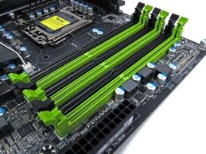

𝙃𝙤𝙬 ğ™ğ™¤ 𝘽𝙪𝙞𝙡𝙙 𝙖 𝙂𝙖𝙢𝙞𝙣𝙜 𝙋𝘾
Welcome to
Now im going to tech you how to build a gaming PC. It doesnt require any soldering and can be done in just a few hours!

Phase 1
If this is your fist build then you going to want to get an antistatic bracelet. This is not so you dont get static shock, but so static will not damage the parts. You then want to connect the bracelet to something metal and then you can start unboxing your first parts that you will need. You wil fist need to unbox your case and then take all the case side panels off so then it will be ready for purring parts into.
Phase 2
Now you want to unbox your motherboard and CPU. You are now going to install the computer CPU. When you open the box for the motherboardit should be in an antistatic bag if not then you should tell the seller that you bought it from. Once you have opened the motherboard lay it upright on top of its box.
Now find the middle part of the board with a small metal rod attached to the side of it
Phase 3
Now take your CPU out of its box and be carful no to touch the gold pins on the back of the CPU, hold it carefully by the sides. On the corner of the CPU there should be a gold or yellow triangle and you need to line that up with the same triangle on the middle socket on your motherboard you found eirlier and then lift up the meteal rod on the side of that socket and with the two triangles lined up, gently drop the CPU into place and once it is in the pull down the rod until it clicks in
You have now istalled the CPU! now you need to plug the CPU cooler into the fan header. If you have an AIO or water cooler then watch this or this
To install the cooler you will need thermal paste. It is usually pre-applied on the bottom of the cooler, and you can check that by seeing if the bottom of the cooler is grey. If it is just copper on the bottom of the cooler then you will need to apply thermal paste yourself. you need to apply a pea-sized amount onto the top of the CPU and the put the cooler on top of the CPU lining up all of the screws. Then you need to screw the cooler in. Be careful not to screw it in too tight othrwise you could damge the motherboard, only screw to screws in snug. Now you need to plug in the cooler to the fan header.which is a 4 pin connector next to thr RAM dim slots (the long black line sockets).

Phase 4
Now you need to instal the RAM and storage (if you have nvme storage). First, find the dimslots on the motherboard
If you have only 2 RAM sticks then dont plug them in directly together otherwise you wont get very good preformance. Check your motherboard maual to see which two dim slots should be populated. Open the dim slots that need to be populated by pushing down the length sides and they should stay down when you take your hands off. Now line up the gap on the bottom of your RAM sticks and line them up with the inside of the dim slots and push the RAM sticks in. You should hear a click and the sides of the dimslots that you opened should be closed. You have now installed your RAM! Now to install nvme storage, look underneath your cooler. Line up the screw-hole at the end of the storage and the screw it in. You have now installed you nvme storage!
Phase 5
You now need to mount your motherboard inside of your case. First, put you case on its back. If it has a glass side panel then the side with the glass panel should be facing up. Then fit in the io sheild which is the cut-out that you will find in your motherboard box and put it into the matching cut out at the back of the case. Now carefully pick up your motherboard and put it in your case laying down flat with the holes on the motherboard lining up with the standoffs and the motherboard ports lining up with the cut-outs in the io sheild in the case then gently screw the motherboard in snug so every hole has a screw screwed into it.
Phase 6
Now you need to install the power supply. This goes at the bottom of your case and if you have a basement space underneath the main part of the case then is will also go there. The socket at the back of the power supply shouls be facing the back outside of the case. Now find the long connector and plug it into the matching socket next to where the RAM is (it is marked as ATX_PWR) and find the matching connector that plugs into the built-in hub at the back of your case, this will power the fans and if you have lights it will power those too.
Phase 7
Now your going to installl your GPU. Now unscrew the PCIE sheild a the back of the case the is perpendicular to the PCIE port on the motherboard. Next, like you did with the RAM look for the gap at the end of the socket and line it up with the end of the GPU. If you need to then try to find an unlock switch which will unslock the PCIE. You may need to check your motherboard but usually you will plug the GPU into the top biggest slot for the best performance. Then screw in the back of the GPU so the HDMI ports dont move the GPU back whan you plug cables in. Now you need to plug in the power for the GPU. Find the matching connector that will plug into the frount of the GPU and plug it in. You have now installed your GPU!
Phase 8
Now you need to connect everything from the power supply to provide everything with power. If you have USB 3.0 the connect the matching cable to the matching port on the motherboard. And connect all of the matching cables for everything else. You have now built your PC!
Phase 9
You now need to plug in your keyboard and mouse into any of the USB ports in either the back of you case or any other USB ports you have on the case. Now plug in your screen into the HDMI ports at the back of the case on the GPU, NOT THE MOTHERBOARD! Otherwise you will be running on intergrated graphics. Dont put the side panels of the case on yet until you can see on the screen that the computer turns on.
Phase 10
You now need to put an operating system on the computer. You can use whichever one you want but here we will be using windows. You can buy windows on G2A which wont cost you alot of money, you can buy that here
Once you have bought that then get the product key from it and keep that safe. You will also need antivirus which you can also buy here.
Now you will need to go to the windows website and download windows onto a USB thumb drive that is at least 5GB. Once that is installed onto the thumb drive, pug the drive into your new PC and setup windows using your product code when prompted. You are now in windows! If you have a high refresh rate monitor then to configure it go into windows settings, system, display then scroll down to advanced display settings then click on the adapter properties click on monitor and choose the highest amount of hertz.
Phase 11
You now need to setup drivers on your PC. We are going to only show to to install drivers with Nvidia for this example. You need to install GeForce Experience and tis will give you all of your game-ready GPU drivers. For the rest of you drivers look at the companys that made your hardware and the boxes for your hardware.
You have now built yourself a gaming PC! Enjoy!